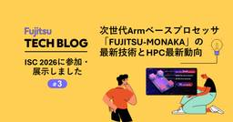

fltech - 富士通研究所の技術ブログ
https://blog.fltech.dev/
富士通研究所の研究員がさまざまなテーマで語る技術ブログ
フィード

NeurIPS 2026 にて "2nd Workshop on Agentic AI Benchmark and Application for Enterprise Tasks" の開催が決定しました 〜論文投稿募集のお知らせ〜
fltech - 富士通研究所の技術ブログ
こんにちは、富士通人工知能研究所の内田・佐藤・茂木です。 このたび、私たちがCarnegie Mellon University（CMU）・慶應義塾大学・ServiceNow Researchとともに提案していたワークショップが、機械学習分野のトップカンファレンスの一つである NeurIPS 2026（The Fortieth Annual Conference on Neural Information Processing Systems、2026年12月、オーストラリア・シドニー開催）の公式併設ワークショップとして採択されましたので、本記事にてお知らせします。あわせて論文投稿の募集も開始…
4時間前

最新LLMのセキュリティ評価：富士通のLLM脆弱性スキャナーによるFable 5／GPT-5.6／Takaneの評価
fltech - 富士通研究所の技術ブログ
こんにちは、セキュリティサイエンス研究所のAI Agent Security Researchチームです。 本記事では、富士通のLLM脆弱性スキャナーを用いて、最新の大規模言語モデルであるFable 5、GPT-5.6、Takane *1のセキュリティを評価した結果を紹介します。今回の評価では、日本語版と英語版の両方のスキャナーでスキャンを実行しました。その結果、最新モデルでは攻撃耐性が全般的に強化されている一方、依然として脆弱性が残っており、継続的な評価と対策が必要であることを確認しました。 2026年8月6日更新： Takaneに富士通のLLMガードレールを組み合わせた場合の評価結果を追記…
2日前

ISC High Performance 2026に参加・展示しました #3 ～次世代Armベースプロセッサ「FUJITSU-MONAKA」の最新技術とHPC最新動向～
fltech - 富士通研究所の技術ブログ
はじめに こんにちは、富士通研究所 先端コンピューティング開発本部の式部剛広、竹内啓人、佐々木正人、秋元秀行、野口輝、柴田泰雅、竹谷凌です。私たちはAI・HPC・クラウドなどの最先端領域の未来を支える次世代Armベースプロセッサ「FUJITSU-MONAKA」をはじめとした「FUJITSU-MONAKA」シリーズの開発に取り組んでいます。また、2025年6月よりスーパーコンピュータ「富岳」の後継システムである「富岳NEXT」の開発を開始しました。これらの価値を世界に訴求すべく、2026年6月22日～6月26日にドイツのハンブルクで開催された国際会議ISC High Performance 20…
2日前

Frontriaコミュニティ始動！技術交流会#1「法律データは偽情報被害撲滅の夢を見るか」開催
fltech - 富士通研究所の技術ブログ
はじめに こんにちは。セキュリティサイエンス研究所の長谷川です。 生成AIの発展は、私たちにさまざまな恩恵をもたらす一方で、AI生成コンテンツを悪用した偽・誤情報の拡散など、社会全体に大きな影響を与える新たなリスクも生み出しています。こうした課題を、一つの組織だけで解決することは容易ではありません。
3日前

リサーチエバンジェリストによる富士通TECH UPDATE✨（FY26-1Qプレスより）
fltech - 富士通研究所の技術ブログ
こんにちは。富士通研究所の山田亜紀子です。 今年4月からFujitsu Research Evangelistとして活動開始しており、TechBlog初発信となります。よろしくどうぞ！！
13日前
ISC High Performance 2026に参加・展示しました #2 ～AI Computing BrokerとHPC・AIの最新動向
fltech - 富士通研究所の技術ブログ
はじめに こんにちは。人工知能研究所 AIコンピューティングCPJの林、長坂、生成AI CPJの白幡です。 2026年6月22日〜26日にドイツ・ハンブルクで開催された国際会議 ISC High Performance 2026（以下 ISC 2026）に、富士通ブースでの展示対応と情報収集のために現地参加しました。 今回、特に注目を集めた発表の一つが、GPUアクセラレータ全盛のなか、富岳と同じくGPUを搭載しない中国のスーパーコンピュータ「LineShine」がTOP500で世界1位となったことです。 本記事では、富士通ブースで展示したGPU効率化ミドルウェア「AI Computing Br…
15日前
Takane 製造特化 -CAD自動検査の取り組みとその技術紹介-
fltech - 富士通研究所の技術ブログ
こんにちは。人工知能研究所の青木です。当研究所では Takane 領域特化技術開発を行っていて、私たちのチームでは製造業向けに CAD検査自動化技術の開発を行っています。先日、開発技術の一つである「CAD品番特定 AI」を法人向け PoC 環境 Fujitsu Kozuchi Research Version の一つとして公開しました。今回その紹介の機会をいただきましたので、合わせて CAD検査自動化についてお話ししようと思います。
25日前
超伝導量子ビットチップを運用するための技術の一例を紹介 ～ジョセフソン接合抵抗の経時変化を抑える低温保管技術～
fltech - 富士通研究所の技術ブログ
こんにちは。量子研究所の川野です。私は、超伝導量子コンピュータに用いる量子ビットチップの製造技術の研究開発を担当しています。今回は、量子ビットチップを運用するために開発した技術の一例を紹介したいと思います。（この記事の内容を、米国材料学会 Materials Research Society 春季大会（2025 MRS Spring Meeting）で発表しました[1]。）
25日前
光を使った量子ネットワークの高速化への第一歩！ ダイヤモンド中SnVセンターと光共振器のコヒーレントな結合に成功
fltech - 富士通研究所の技術ブログ
モジュラー量子コンピューティングコアプロジェクトでシニアプロジェクトディレクターをやっている河口です。この記事では、デルフト工科大学、QuTechの研究チームが私たち富士通との共同研究プロジェクト[1]において実現したダイヤモンドスピン量子技術の最新成果について解説していきます。なお、本成果は、量子分野の主要学術論文誌であるPhysical Review Xで2026年6月に発表され[2]、QuTechの公式サイトにてプレスリリースされています[3]。
1ヶ月前
ISC High Performance 2026に参加・展示しました #1 ～量子コンピュータ×HPC関連セッションを中心に
fltech - 富士通研究所の技術ブログ
はじめに こんにちは、量子研究所の五木田です。 2026年6月22日から26日まで、ドイツ・ハンブルクで開催された国際会議 ISC High Performance 2026（以下、ISC 2026）に参加しましたので、その内容をご紹介します。本記事では、特に量子コンピュータをHPC環境に統合するためのプラットフォーム関連のセッションを中心にレポートします。
1ヶ月前
1万量子ビットへの道：富士通が挑む“読み出し”の革新
fltech - 富士通研究所の技術ブログ
こんにちは．量子研究所の才田です．2025年3月28日に開催されたFujitsu Quantum Day 2025 Japan [1] にて，ポスター発表を行いました．ここでは，その内容について紹介します．
1ヶ月前
超伝導量子コンピュータのためのSパラメータを用いた大規模チップ設計手法を紹介
fltech - 富士通研究所の技術ブログ
量子研究所 量子ハードウェアコアプロジェクトの芝です。理化学研究所と共同で超伝導量子コンピュータの研究開発を行っています。 Fujitsu Quantum Day 2026 Japan [1] にて、Sパラメータを用いた大規模超伝導量子ビットチップ設計手法についてポスター発表を行いました。国際会議International Microwave Symposium 2025 (IMS2025)での発表 [2] と同内容になります。この記事では、その内容をもとに、超伝導量子ビットチップの設計で何が難しいのか、そしてそれに対してどのような解析手法を使っているのかを紹介します。
1ヶ月前
FG2026に2件採択! ”人物行動意図推定”と ”人体モーションキャプチャ向けマルチカメラ自己校正”に関する最新技術を紹介
fltech - 富士通研究所の技術ブログ
こんにちは、Physical AI研究所のWorld Inteligence CPJ) 長村とPhysical OS CPJ) Fanです。 今回は、FG2026[^1]に採択された2つの研究成果について紹介します。
1ヶ月前
量子コンピュータによる多重配列アラインメントの高速化
fltech - 富士通研究所の技術ブログ
こんにちは、量子研究所・量子アプリケーションCPJの木村悠介です。 私は量子コンピュータの応用先の一つとして、ゲノム解析に着目しています。 今回、ゲノム解析の重要な技術の１つである多重配列アラインメント (Multiple Sequence Alignment, MSA)の一部を量子回路として実装し、その回路を同じく私たちが開発している決定グラフ (Decision Diagram, DD) 型量子回路シミュレータで高速にシュレーションした研究をarXivで公開しました。 この記事では、論文の内容を分かりやすく紹介します。
2ヶ月前
量子アルゴリズムによる複雑系材料開発の飛躍的加速
fltech - 富士通研究所の技術ブログ
皆様、こんにちは。量子研究所の量子アプリCPJの木村です。今回ご紹介する技術は、2026年5月1日に早稲田大学（富士通文中記載）にてプレスリリースされました早稲田大学と富士通の共同研究による最新の研究成果です[1]。この発表を多くの方々にお届けするため、Fujitsu Tech Blogでも詳しくご紹介させていただきます。その詳細はNature Portfolio社の「Scientific Reports」に掲載された論文[2]でもご確認いただけます。
3ヶ月前
NVIDIA GTC 2026に現地参加しました
fltech - 富士通研究所の技術ブログ
こんにちは、先端コンピューティング開発本部の藤田と人工知能研究所の近藤です。 2026年3月16日から19日に、アメリカ合衆国カリフォルニア州のサンノゼでNVIDIAの年次技術イベントであるNVIDIA GTC 2026が開催されました。 本イベントは日本からでもバーチャルで各セッションに参加することができますが、今回、実際に渡米し、サンノゼにて現地参加するという貴重な機会をいただいたため、注目トピックや現地の様子についてご紹介します。
3ヶ月前
Early-FTQC時代を切り拓く！富士通と大阪大学が化学材料計算の新技術で量子コンピューティングを加速
fltech - 富士通研究所の技術ブログ
近年、次世代の技術として注目を集める量子コンピュータ。医療、素材開発、そしてエネルギー分野まで、その応用範囲は計り知れません。しかし、実用化にはまだ高いハードルが立ちはだかっています。特に、量子ビットのエラー問題は深刻で、高精度な計算を実現するには、エラーを訂正するための冗長性が必要となります。そのため、現実的な計算には100万規模の量子ビットが必要とされますが、これは相当先の未来の技術であるのが現状です。 この課題に対し、私たちは画期的なアプローチを考案しました。量子研究所*1のロバスト量子計算CPJでは、「STARアーキテクチャver. 3」（富士通スモールリサーチラボ*2に基いて富士通と…
4ヶ月前
ハーネスエンジニアリングのすすめ: 27BモデルでSWE-bench VerifiedのSLM SOTAを達成 (TTS@8=74.8%)
fltech - 富士通研究所の技術ブログ
Qwen3.5-27B を追加学習なしで使い、実在する OSS issue をどこまで直せるかを測る SWE-bench Verified で、8本の候補から最終パッチを選ぶ構成により 229B 未満のローカル LLM としては2026年4月7日時点で SOTAである 74.8% を達成しました。
4ヶ月前
特集：富士通発！行動変容支援プラットフォームとは？ 第4回「BXでイベントプロモーションはどう変わる？」
fltech - 富士通研究所の技術ブログ
こんにちは、コンバージングテクノロジー研究所の松木です。 私たちは、行動変容支援プラットフォーム（通称 BXPF）の研究開発を進めています。 2026年3月に、このBXPFの成果の一部である 「行動変容プランニング」 を公開しました。公開に伴い、本特集では「行動変容支援プラットフォーム（BXPF)」について、全4回で紹介しています。 ● 第1回 DXの次はBX？ 行動科学を誰でも使える時代へ ● 第2回 人が動く施策を、エビデンスで設計する ● 第3回 用途や個人に合わせて進化するアプリ ● 第4回 BXでイベントプロモーションはどう変わる？ ★今回★ 特集の最後となるこの記事では、 これまで…
4ヶ月前
聾学校の利用実態から考えた音をからだで感じるOntenna（オンテナ）の活用方法
fltech - 富士通研究所の技術ブログ
こんにちは！コンバージングテクノロジー研究所の杉山友里です。 私たちは、障害やDE&Iの理解促進に繋がる活動を通して、人々のQOLを向上し、ウェルビーイングな社会の実現に貢献するために日々取り組んでいます。 この度、音をからだで感じることができるデバイス「Ontenna（オンテナ）」が、聾学校でどのように利用されているか調査した結果を紹介いたします！
4ヶ月前
特集：富士通発！行動変容支援プラットフォームとは？ 第3回「用途や個人に合わせて進化するアプリ」—国際学会BCSSでの発表内容を中心にご紹介！
fltech - 富士通研究所の技術ブログ
コンバージングテクノロジー研究所の山口です。 私たちは、行動変容支援プラットフォーム（通称 BXPF）の研究開発を進めています。 2026年3月に、このBXPFの成果の一部である 「行動変容プランニング」 を公開しました。公開に伴い、本特集では「行動変容支援プラットフォーム（BXPF)」について、全4回で紹介しています。 ● 第1回 DXの次はBX？ 行動科学を誰でも使える時代へ ● 第2回 人が動く施策を、エビデンスで設計する ● 第3回 用途や個人に合わせて進化するアプリ ● 第4回 BXでイベントプロモーションはどう変わる？ 第2回では、行動科学の知見に基づいて「なぜその施策が有効なのか…
4ヶ月前
特集：富士通発！行動変容支援プラットフォームとは？ 第2回「人が動く施策を、エビデンスで設計する」
fltech - 富士通研究所の技術ブログ
こんにちは、コンバージングテクノロジー研究所の片桐です。 私たちは、行動や習慣に関する課題を解決するために、行動変容支援プラットフォーム Behavior Transformation Platform（通称 BXPF） の研究開発を進めています。 2026年3月に、このBXPFの成果の一部である 「行動変容プランニング」 を公開しました。公開に伴い、本特集では「行動変容プラットフォーム（BXPF)」について、全4回で紹介しています。 ● 第1回 DXの次はBX？ 行動科学を誰でも使える時代へ ● 第2回 人が動く施策を、エビデンスで設計する ★今回★ ● 第3回 用途や個人に合わせて進化する…
4ヶ月前
特集：富士通発！行動変容支援プラットフォームとは？ 第1回「DXの次はBX？ 行動科学を誰でも使える時代へ」
fltech - 富士通研究所の技術ブログ
コンバージングテクノロジー研究所の石原、山口、松木、片桐です。 私達の研究グループでは、行動変容支援プラットフォーム Behavior Transfomation Platform（通称 BXPF） の研究開発を進めています。 このBXPFの成果の一部である 「行動変容プランニング」 の公開に合わせて、TechBlogにて全4回に分けて特集記事を組みました。 ● 第1回 DXの次はBX？ 行動科学を誰でも使える時代へ ★今回★ ● 第2回 人が動く施策を、エビデンスで設計する ● 第3回 用途や個人に合わせて進化するアプリ ● 第4回 BXでイベントプロモーションはどう変わる？ どうぞ最後まで…
4ヶ月前
AIは「なぜそう思うか」まで見せる！〜富士通の最先端グラウンディング技術がMLLMを革新〜
fltech - 富士通研究所の技術ブログ
こんにちは、富士通研究開発センター（FRDC）のGenerative AI研究グループに所属しているFei Li、Jiaqi Ning、Ming Yangです。本日は、私たちが開発したマルチモーダル大規模言語モデル（MLLM）のための「グラウンディング技術」についてご紹介したいと思います。
4ヶ月前
富士通が提案する企業向けベンチマーク：AIエージェントモデルの真価を引き出す #3「読む」から「考える」へ：企業の法務AIを支えるFujitsu Assessing Compliance in Enterprise Datasetのご紹介
fltech - 富士通研究所の技術ブログ
本記事は、TechBlog シリーズ「富士通が提案する企業向けベンチマーク：AIエージェントモデルの真価を引き出す」の第 2 回です。本シリーズは全 3 回で構成され、以下のスケジュールで公開しています 第 1 回：AIが「見ていないものを見る」とき：マルチモーダル大規模言語モデル（MLLM）の幻覚診断用ベンチマークの紹介（公開済）🔗 第 2 回：AAAI 2026 AABA4ET参加報告とFujitsu RAG Hard Benchmarkの紹介 (公開済)🔗 第 3 回：企業の法務AIを支えるFujitsu Assessing Compliance in Enterprise Datase…
4ヶ月前
「Fujitsu 因果AI」のご紹介 #3 因果アクション最適化技術の実証事例
fltech - 富士通研究所の技術ブログ
こんにちは。人工知能研究所の高木です。 富士通では企業におけるデータドリブンによる意思決定を支援するため、「Fujitsu 因果AI」を開発しました。 この技術は、データから因果関係を分析し、それを用いることで最も効果が高くかつ悪影響を及ぼさない施策を広範囲な情報をもとに推薦するものです。 2025年7月より、そのアップデート版をAIサービス Fujitsu Kozuchi (R&D) のラインナップとして提供を開始しました。 本記事では、因果アクション最適化技術の実証事例をご紹介します。
4ヶ月前
Fujitsu ナレッジグラフ拡張RAG技術のご紹介 #6 ナレッジ公開 ～単なるデータから「使えるナレッジ」の共有へ～
fltech - 富士通研究所の技術ブログ
こんにちは。人工知能研究所の菊月・成田・菊地・宮原です。 富士通では企業における生成AIの活用促進に向けて、多様かつ変化する企業ニーズに柔軟に対応し、企業が持つ膨大なデータや法令への準拠を容易に実現する「エンタープライズ生成AIフレームワーク」を開発し、2024年7月よりAIサービス Fujitsu Kozuchi (R&D) のラインナップとして順次提供を開始いたしました。 エンタープライズ生成AIフレームワークは、企業のお客様が特化型生成AIモデルを活用する上で生じる、 企業で必要とされる大規模データの取り扱いが困難 生成AIがコストや応答速度をはじめとする多様な要件を満たせない 企業規則…
4ヶ月前
海洋デジタルツインの社会実装へ ~複数種藻場を対象とした藻場定量化技術の実証実験~
fltech - 富士通研究所の技術ブログ
こんにちは。コンバージングテクノロジー研究所の鈴木と、Human Digital Twin 事業部の伊集院です。 私たちは、海の環境をデジタル上に再現し、保全や産業活用につなげる『海洋デジタルツイン』の研究開発に取り組んでいます。 その一環として、海藻などがCO₂を吸収する量を定量的に評価し、カーボンクレジットとして活用するための藻場定量化技術を開発しています。 これまでに、単一の海藻種からなる藻場を対象として、国内のブルーカーボンクレジット制度であるJブルークレジットの認証を取得するなど、技術の有効性を実証してきました （参考：宇和島発！漁協・地域・自治体が連携したアマモ再生ブルーカーボンプ…
4ヶ月前
AIに社員の性格をインストールする？富士通×お茶の水女子大によるペルソナLLMの試み
fltech - 富士通研究所の技術ブログ
こんにちは．富士通 コンバージングテクノロジー研究所の山並と，データ&セキュリティ研究所の志賀です． 私たちは，お茶の水女子大学との共同研究で「AIに社員の性格をインストールする」というユニークな試みに挑戦しています． その目的は，多様な社員の「声なき声」を拾い上げ，より良い組織をつくること．鍵となるのが，人の心を科学的に測定する心理学のアンケート（心理尺度）です． この記事では，まず心理学の知見で見えないバイアスを可視化する研究を紹介し，続いてその知見を応用したペルソナLLM開発についてお話しします．
4ヶ月前
マルチモーダルLLMハルシネーションを抑制する新技術：アテンション強化型ハルシネーション軽減
fltech - 富士通研究所の技術ブログ
こんにちは、富士通研究開発センター（FRDC）生成AI研究グループのLi Fei、Shi Zhiqiang、Wang Jingyiです。本日は、私たちが開発した「アテンション強化型ハルシネーション軽減技術」についてご紹介します。この技術は、主に画像もテキストも理解するAI（マルチモーダル大規模言語モデル、略してMLLM）が、間違った情報を生成してしまう「ハルシネーション」という課題を解決するためのものです。 この技術に関する3本の論文が、画像処理や信号処理の国際会議WACV 2026（IEEE/CVF Winter Conference on Applications of Computer …
4ヶ月前